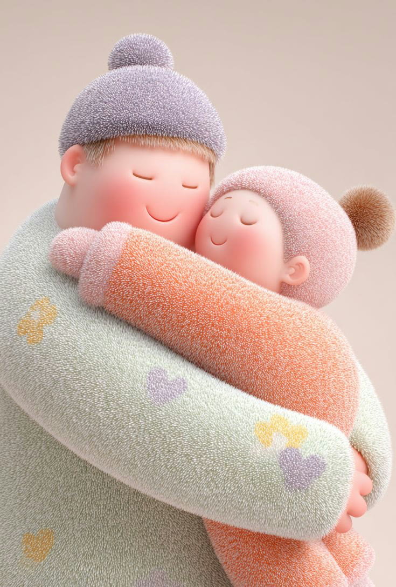
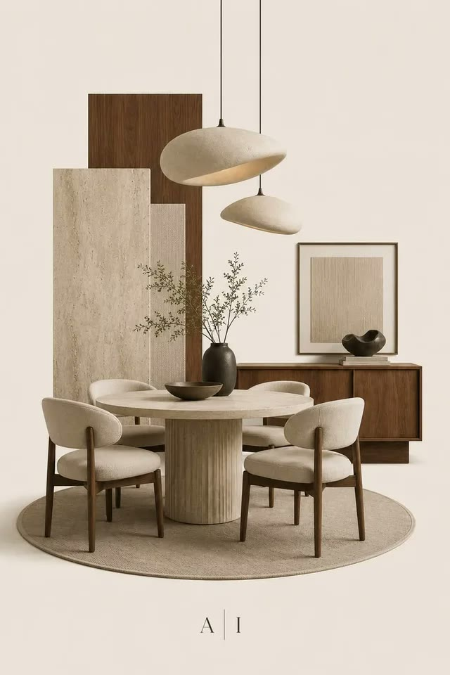
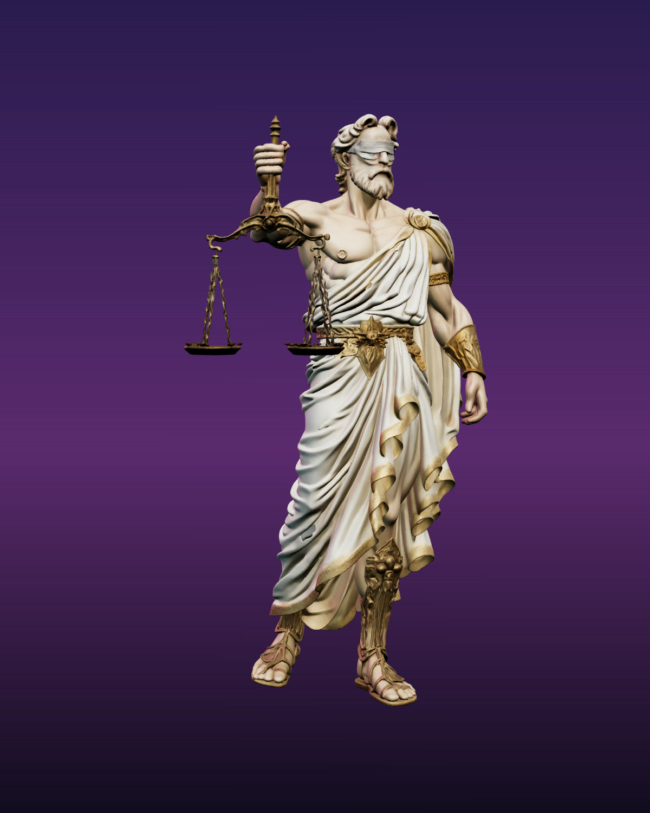
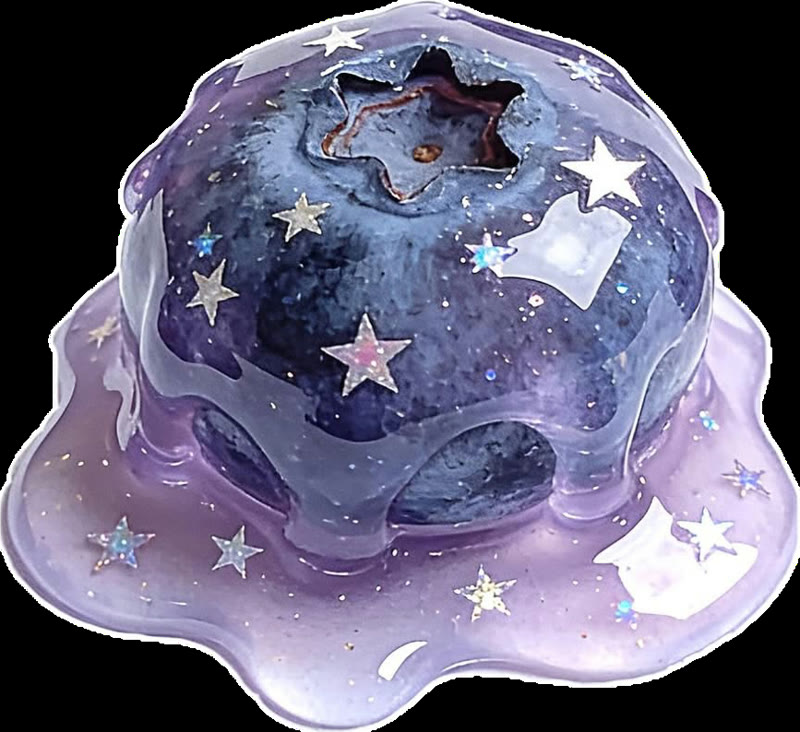
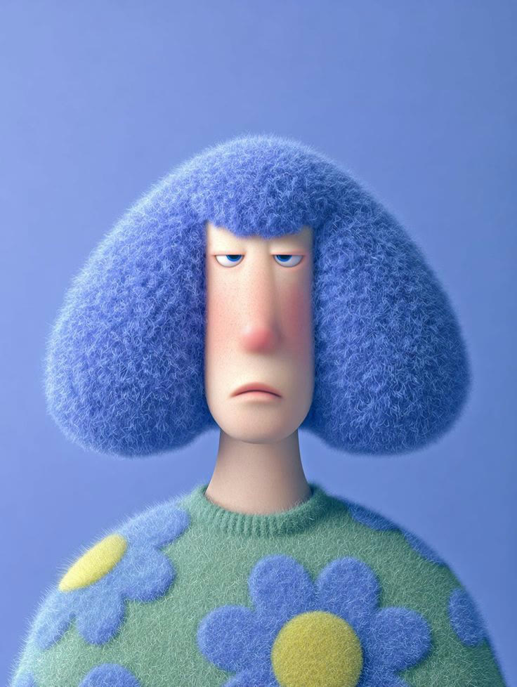
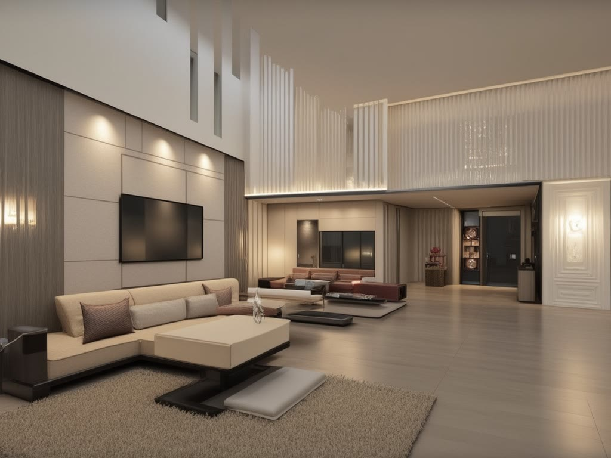

Moodboard · Marua Makpyr
Ten images that sum up my eye: materials you want to touch, calm warm interiors, a single strong colour against a quiet frame, and violet-to-coral gradients. All of them were made with Hopper, the AI platform I build.





